Руководство по быстрому старту
Все примеры, приведённые ниже, предполагают, что вы уже зарегистрировались и вошли на платформу.
Если вы еще не зарегистрировались или не выполнили вход, следуйте инструкциям из раздела Регистрация
Подключение Claude к магазину Wildberries
Получение API-токена Wildberries
Любая интеграция с Wildberries начинается с создания API-токена. Он позволяет получать данные из магазина Wildberries и выполнять действия от его имени.
Подробнее об интеграции с Wildberries см. в разделе Типы аккаунтов
⚠️ ВНИМАНИЕ: для создания токена вы должны быть владельцем личного кабинета Wildberries.
Перейдите на Портал Продавца Wildberries и откройте раздел Интеграции по API. Нажмите + Создать токен.
В открывшемся окне выберите Для интеграции вручную, затем Базовый токен.
Укажите название токена (на ваше усмотрение) и выберите разделы, к которым он будет иметь доступ.
Для работы всех функций MarketAut необходимо выбрать:
- Контент
- Цены и скидки
- Документы
После выбора разделов нажмите Создать токен и скопируйте полученный токен в буфер обмена (Ctrl+C или Command+C).

Создаём Аккаунт для подключения к Wildberries
Теперь необходимо создать аккаунт для подключения к магазину Wildberries.
Аккаунт — хранит данные для подключения к магазину (например, API-токен) и может использоваться узлами диаграммы, которым требуется доступ к Wildberries.
Подробнее об аккаунтах см. в разделе Аккаунты
В интерфейсе MarketAut перейдите в раздел Конфигурация → Аккаунты
Нажмите кнопку + Добавить Аккаунт.
В поле Тип Аккаунта выберите Wildberries и заполните следующие поля:
Название — обязательное поле. Укажите любое удобное название, например: Магазин.
Описание — необязательное поле. При необходимости можно указать произвольное описание.
API Токен — вставьте API-токен , полученный в личном кабинете продавца Wildberries на предыдущем шаге.
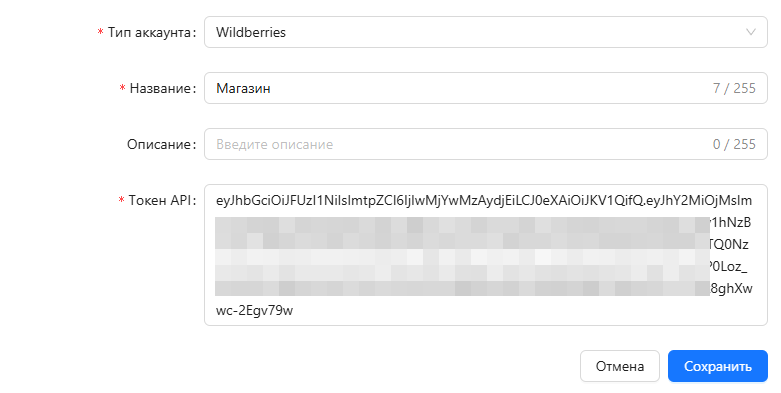
Нажмите Сохранить.
После сохранения созданный аккаунт отобразится в списке аккаунтов.
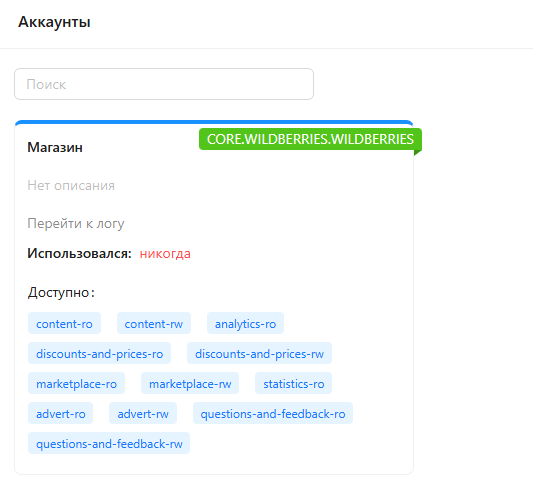
На карточке аккаунта синим цветом отображаются разделы API, к которым у токена есть доступ.
Создаем диаграмму для ИИ-агента
Теперь необходимо создать диаграмму, на которой будет настроено, к каким инструментам и данным получит доступ ИИ.
Подробнее о диаграммах можно прочитать в разделах Диаграммы и Настройка диаграммы
В интерфейсе MarketAut перейдите в раздел Конфигурация → Диаграммы
Нажмите Добавить диаграмму.
Заполните следующие поля:
Название — обязательное поле. Укажите любое удобное название, например: Агент по товарам.
Описание — необязательное поле. При необходимости можно указать произвольное описание.
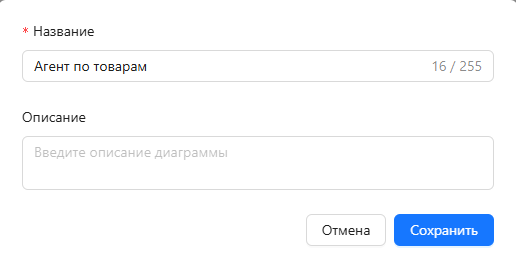
Нажмите Сохранить.
После сохранения в списке диаграмм появится новая диаграмма со статусом Не сконфигурирована.
Для перехода к настройке диаграммы нажмите кнопку её открытия (значок квадрата).
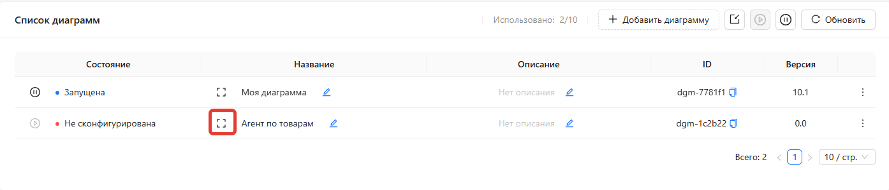
Перед вами откроется пустой холст диаграммы, на котором необходимо разместить и настроить узлы.
Настройка диаграммы
Добавим на диаграмму узлы Wildberries и ИИ-агента.
Подробнее о настройке диаграмм можно прочитать в разделе Настройка диаграммы
На панели инструментов нажмите кнопку добавления узла (+).
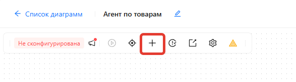
В списке доступных узлов выберите Каталог товаров и нажмите Добавить.
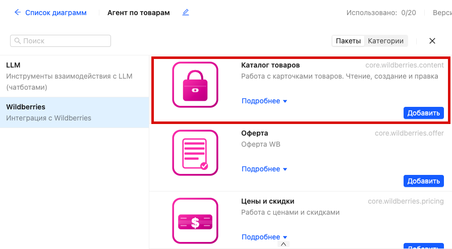
Мы добавили узел Каталог товаров, который позволяет работать с карточками товаров Wildberries.
Теперь необходимо указать, с каким магазином будет работать этот узел. Для этого нужно привязать к нему аккаунт, созданный ранее.
При необходимости вы можете работать сразу с несколькими магазинами Wildberries, создав отдельный аккаунт для каждого из них.
Для привязки аккаунта:
1) Выберите узел Каталог товаров на диаграмме.
2) В правой части экрана откроется панель его настроек.
3) Перейдите на вкладку Аккаунты.
4) В выпадающем списке выберите нужный аккаунт.
5) Нажмите Сохранить.
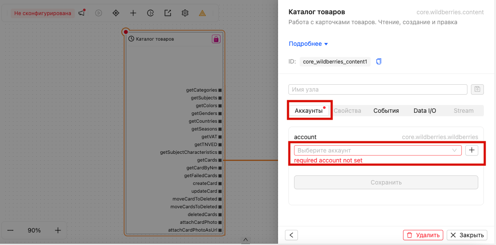
Теперь аналогичным образом добавьте узел MCP.
Узел MCP обеспечивает взаимодействие между вашим ИИ и платформой MarketAut. Через него ИИ получает доступ к инструментам, подключённым на диаграмме.
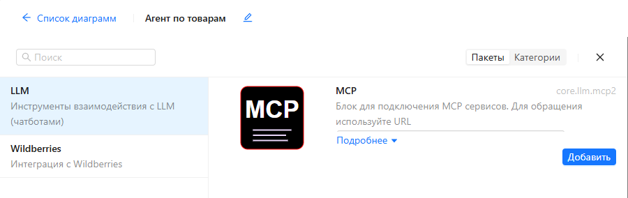
Для узла MCP необходимо указать идентификатор в поле ID.
Этот идентификатор будет использоваться при подключении ИИ к данному узлу.
При необходимости вы можете создать несколько узлов MCP с разными идентификаторами, например: content, legal, wb. Это позволит подключать к ИИ разные наборы инструментов независимо друг от друга.
Выберите узел MCP на диаграмме.
В правой части экрана откроется панель его настроек. На вкладке Свойства в поле ID введите значение wb и нажмите Сохранить.
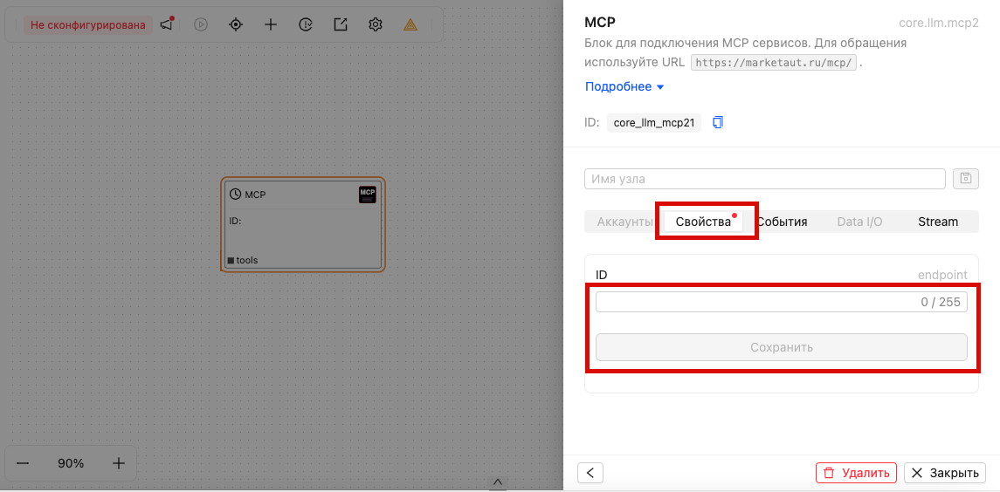
Узлы настроены. Теперь необходимо определить, к каким инструментам получит доступ ИИ.
Каждый выход узла Каталог товаров представляет собой отдельный инструмент.
Например:
cards- получение списка карточек товаров;getCardByNm- получение информации о карточке товара по её артикулу;createCard- создание новой карточки товара;updateCard- изменение существующей карточки товара.
Вы можете предоставить ИИ доступ к любому набору инструментов.
В рамках данного примера дадим ИИ доступ к получению списка карточек товаров cards и просмотру информации о конкретной карточке getCardByNm.
Для этого соедините выходы cards и getCardByNm со входом tools узла MCP.
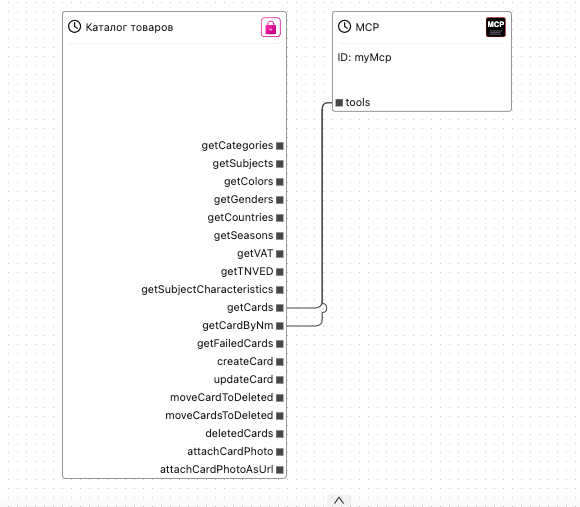
Готово!
Теперь необходимо запустить диаграмму.
Запуск переводит диаграмму из режима настройки в рабочий режим. После запуска ИИ сможет использовать инструменты, подключённые к узлу MCP.
Для запуска диаграммы нажмите кнопку Запустить в верхней части окна.
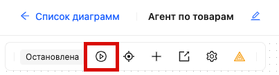
Подключение ИИ
После настройки и запуска диаграммы остаётся подключить её к ИИ. В качестве примера будем использовать Claude.
Подробнее о процессе подключения можно прочитать в разделе Подключение Claude
В данном руководстве мы не будем подробно рассматривать процесс подключения, так как он описан в отдельном разделе.
⚠️ ВАЖНО
Для подключения Claude (или любого другого ИИ с поддержкой MCP) потребуется адрес подключения MCP.
Этот адрес формируется на основе значения ID, указанного при настройке узла MCP.
Например, если в поле ID было указано значение wb, то адрес подключения будет следующим:
https://marketaut.ru/mcp/wb
Если указано другое значение, адрес подключения будет отличаться.
Текущий адрес подключения всегда можно посмотреть в настройках узла MCP, выбрав его на диаграмме.
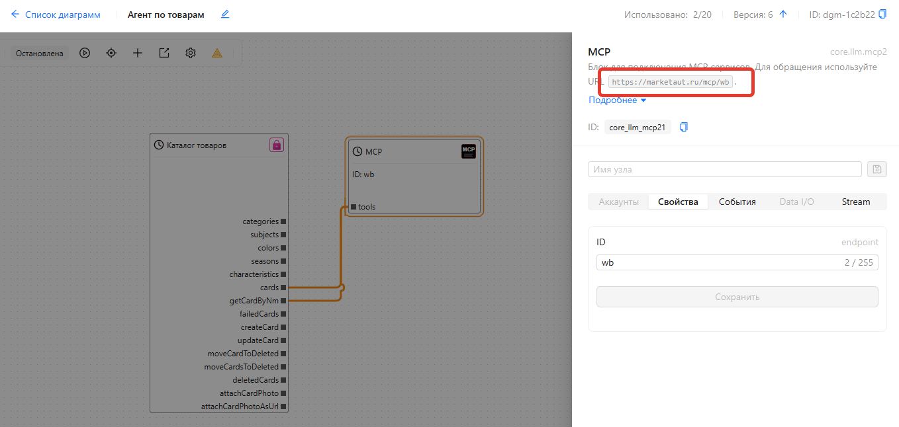
Это значение необходимо указать при добавлении connector в Claude:
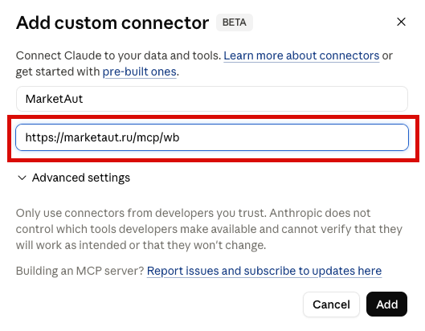
После подключения в списке доступных инструментов Claude появятся cards и getCardByNm:
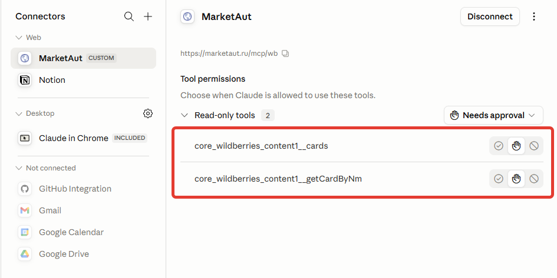
Проверка
Подключение завершено.
Чтобы убедиться, что всё работает корректно, задайте ИИ любой вопрос о товарах вашего магазина. Например:
Какие товары есть у меня в магазине?
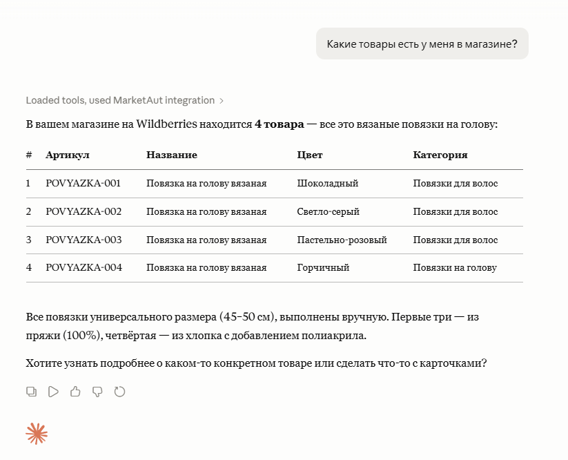